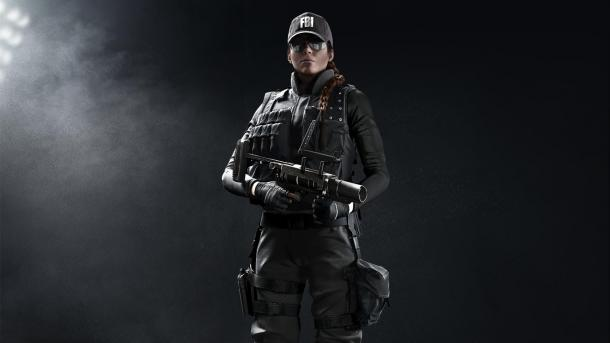

\
Оперативник Rainbow Six Siege - Ash
- Гаджет: гранатомет M120 CREM
- Броня: 1/3
- Скорость: 3/3
Ash стала основным выбором игроков еще на момент запуска Rainbow Six Siege. По сей день она продолжает оставаться одним из самых популярных, универсальных и смертоносных оперативников в игре.
Причиной такой востребованности Ash стала ее мобильность (ну и немного проблемы с хитбоксов, из-за чего врагам бывает трудно попасть по ее модели). В ростере атакующих бойцов оперативница является одной из немногих, кто имеет третий уровень скорости. Это делает ее настоящим кошмаром и ужасом, который способен уже в первые секунды раунда ворваться на точку, где защитники все еще заняты укреплением стен и расстановкой ловушек.
Компактный гранатомет M120 CREM, который дает в распоряжение игрока два разрывных заряда, отлично справляется с дверными проемами, окнами и неармированными стенами.
Поскольку основная роль Ash заключается в выступлении авангардом штурмовой группы, разработчики позаботились о том, чтобы оперативница имела одну из лучших штурмовых винтовок в игре - R4-C. Да, оружие имеет сильную и непредсказуемую отдачу, но в руках опытного игрока оно способно доставить немало проблем команде противника.